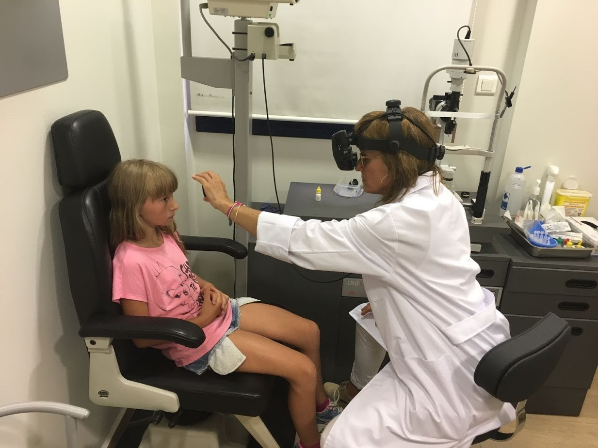

Revisions mèdiques i seguiment de salut
Un dels pilars fonamentals del projecte d’acollida és garantir la salut dels infants. Per aquest motiu, tots els nens i nenes reben una atenció mèdica completa que inclou controls generals, revisions especialitzades i un seguiment exhaustiu del seu estat físic durant tota l’estada.
Controls generals i analítiques
En arribar, es realitzen analítiques de sang i exploracions generals per conèixer el seu estat de salut. Aquestes proves són essencials per detectar possibles mancances nutricionals, infeccions o altres problemes que puguin passar desapercebuts en el seu país d’origen.
Revisions oculars i bucodentals
Molts infants arriben amb problemes de visió o amb una salut dental delicada. Gràcies a la col·laboració de professionals voluntaris, es realitzen revisions oculars i bucodentals que permeten diagnosticar i tractar afeccions que, d’altra manera, podrien afectar greument el seu benestar i aprenentatge.
Mesura de radioactivitat
Un aspecte únic d’aquest projecte és la mesura del nivell de radioactivitat present en el cos dels infants. Aquesta prova es fa tant a l’arribada com abans de la tornada, comprovant com unes setmanes en un entorn sa redueixen significativament els nivells d’exposició a la radiació. Es tracta d’un resultat tangible que demostra l’impacte positiu de l’acollida.
Un estiu segur i saludable
Tots aquests controls garanteixen que els nens visquin un estiu amb les millors condicions possibles. A més de l’atenció mèdica, també reben orientacions sobre hàbits saludables, alimentació equilibrada i higiene personal, aprenent valors que podran aplicar al seu dia a dia.
La salut és un dret fonamental, i aquest projecte contribueix a fer que aquests infants puguin recuperar energia, créixer amb més seguretat i viure una experiència transformadora.
← Tornar al blog